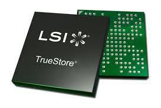

Primero hay que ir definiendo, un circuito combinacional es un circuito que su salida depende solamnete de la combinacion de sus entradas en el momento que se esta realizando la medida en la salida.

Circuito LSI
Son circuitos a alta escala de integracion. Este fue creado en la decada de 1960 y 1970, se hicieron posibles gracias a descubrimientos experimentales que mostraban que artefactos semiconductores podían realizar las funciones de los tubos de vacio, así como a los avances cientificos de la fabricacion de semiconductores a mediados del siglo XX.
La integracion de grandes cantidades de pequeños transistores dentro de un pequeño espacio fue un gran avance en la elaboracion manual de circuitos utilizando componentes electronicos discretos. La capacidad de produccion masiva de los circuitos integrados, asi como la fiabilidad y acercamiento a la construccion de un diagrama a bloques en circuitos, aseguraba la rapida adopcion de los circuitos integrados estandarizados en lugar de diseños utilizando transistores discretos.
Tienen dos principales ventajas sobre los circuitos discretos: costo y rendimiento.
Son los que estan constituidos por un numero de compuertas logicas comprendidas entre 12 y 100.Los circuitos MSI se clasifican en:
-Comunicadores: Transmiten y modifican informacion
-Codificadores: Con prioridad o sin prioridad
-Decodificadores: Excitadores y no Excitadores
-Multiplexores y Desmultiplexores

Para mas informacion dar click en el video